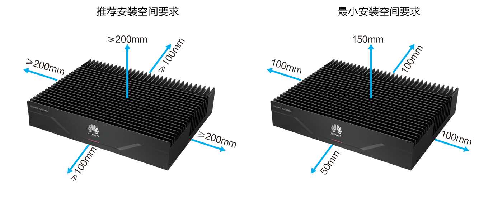
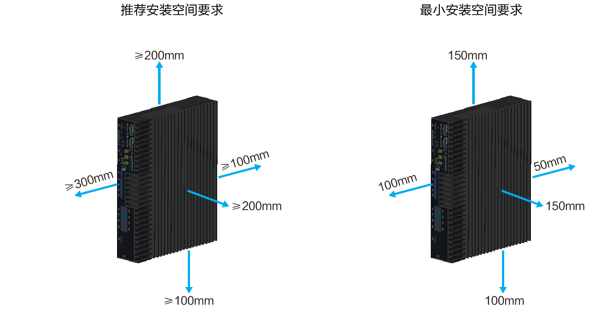
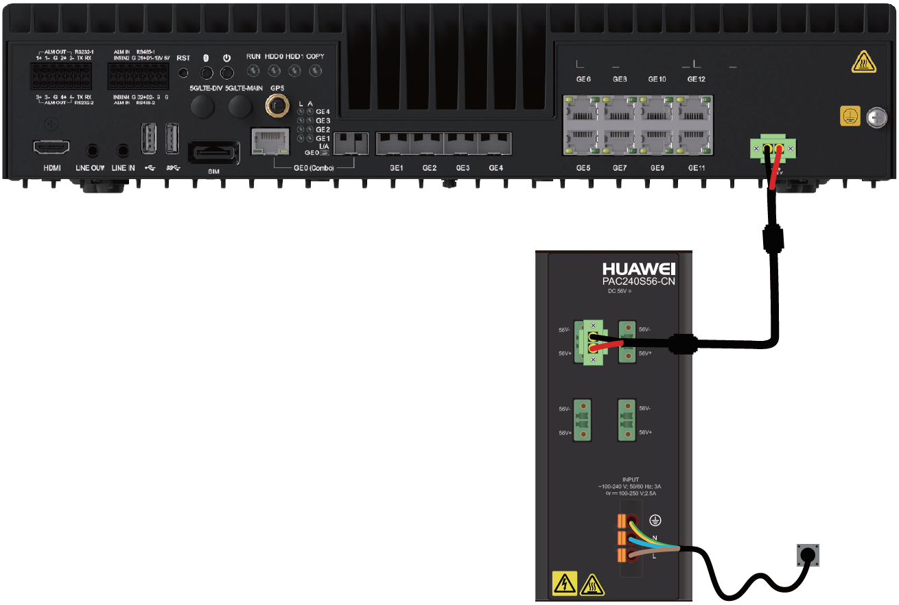
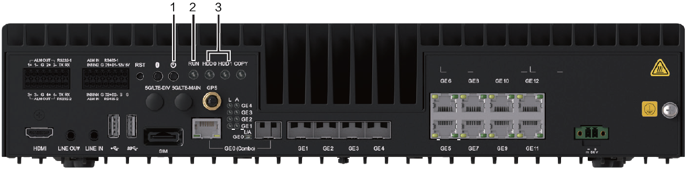

设备安装环境要求
- 当前仅支持落地柜安装方式，不支持其他安装方式。
- 保证落地柜内工作台的平稳性并良好接地。
- 机柜内保持通风顺畅，如果是密闭机柜需要配置风扇+热交换器。
- 不允许安装在完全封闭且没有冷却系统的室内机柜或室外机柜中。
- 不允许安装在完全封闭且没有冷却系统的挂柜或者伪装盒中。
- 请勿在设备上堆放杂物。
- 严禁将水杯、饮料等装有液体的杯具靠近或放在设备上，以免液体渗漏造成安全隐患。若有异物或液体进入设备，请立刻停止使用并断开电源，拔出连接在设备上的所有线缆，并联系售后人员。
设备安装空间要求
设备安装过程中，请保证机柜环境至少满足最小安装空间要求，否则可能导致设备运行异常。
- 推荐安装空间是指可以保证设备的正常运行、散热，同时具备充分的操作维护空间（例如查看指示灯状态，端口操作）。在安装空间充分的情况下，建议采用推荐安装空间。
- 最小安装空间是指可以保证设备的正常运行、散热的空间，但无法保证合理的操作维护空间。在安装空间特别有限的情况下，可以采用最小安装空间。
- 平放安装，最高工作温度支持70℃。

- 竖立安装，最高工作温度支持60℃。

设备上电
- 先使用直流电源线连接ITS800 和电源适配器，然后使用交流电源线连接电源适配器和电源插座。
电源接通后ITS800 自动上电。

表1 设备连接方式分类
|
规格
|
连接方式
|
|---|
直流电源线
|
双色线缆
|
红色端：连接ITS800 和电源适配器的正级（56V+）。
|
黑色端：连接ITS800 和电源适配器的负级（56V-）
|
交流电源线
|
三色线缆
|
黄绿相间色端连接接地端
|
蓝色端连接零线端（N）
|
棕色端连接火线端（L）
|
交流电源插头
|
交流电源插头连接插座
|
- 检查设备前面板的指示灯状态，了解设备的运行情况。

表2 指示灯状态解释编号
|
指示灯名称
|
正常工作状态
|
|---|
1
|
安全下电指示
|
绿色（常亮）：表示正在工作。
绿色（闪烁）：表示正在下电过程中。
熄灭：表示完成下电，可以断电。
|
2
|
健康指示灯
|
绿色（常亮）：表示设备运转正常。
红色（闪烁）：表示系统产生告警。
|
3
|
硬盘指示灯
|
绿色（常亮）：表示硬盘运转正常。
绿色（闪烁）：表示硬盘正在读写。
红色（常亮）：表示硬盘故障。
黄色（闪烁）：硬盘有数据读写，且存在硬盘故障。
|